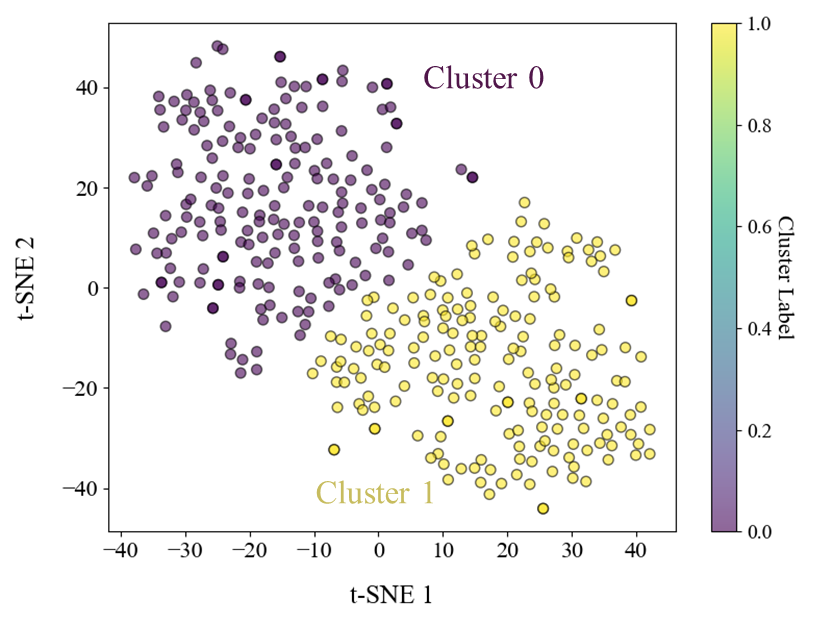

Pulse wave time series unsupervised clustering with importance ratios for heart failure subgroups detection
Journal of Biomechanical Science and Engineering, 2025
Unsupervised analysis of pulse-wave time series and interpretable patient subgroup differences.